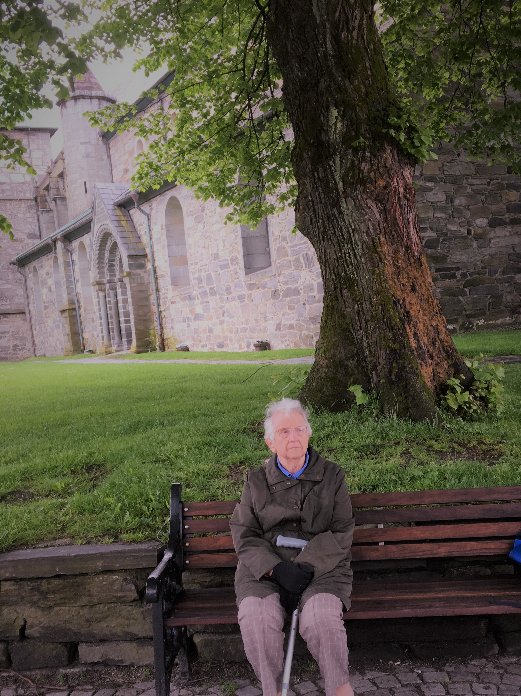

Norway Cruise 2017
Sunday 4th June 2017
Aurora picked up her local pilot, passed Kvitsoy Island on the port side, took a large turn to starboard,
and made her way eventually alongside Strandkaien. Clearance was granted by the local authorities, and passengers were free to explore
the city of Stavanger.

Stavanger, the capital of Rogaland Fylke (county), is in southwestern Norway, and originally developed as a fishing port before becoming
the centre of Norway's oil and gas industry. There was some sort of settlement there in the 8th centuryn but it wasn't until 1125 when
the cathedral was built, that it became a ssignificant place. Three hundred years later it received a royal charter,but remained a small
trading town. Things changed in 1873 when the first fish preserving plant opened. By the 1920's there were 70 canneries. In April 1940,
Stavanger was one of points where the invading German army landed. The demise of the sardine industry,(the last of the cannaries closed
in 1983), coincided with the discovery of offshore oil deposits in the 1960's.
Gamle Stavanger has the largest concentration of 18th century wooden buildings in northern Europe. The Domkirke or Cathedral was built
under the direction of Bishop Reinald of Winchester. It is the best preserved medieval church in Norway.
At 10am, alarms were sounded and the crew exercised in their emergency duties. Mum and I had breakfast in the self-service place,
before heading out into town. We didn't need to show our passports, our cruise cards were sufficient for the Port Authorities.
It was quite chilly, and Mum was glad of her gloves. We made our way on foot to the cathedral, but they were having their Pentecost
service and wanted no tourist to step foot inside until 1.00pm. I can understand them not wanting tourist wandering around during
services, but Mum would have enjoyed being part of the service. We headed back on board ship. Mum struggled to understand we had to
go through a mag and bag proceedure to get back on board and had a wrestling match with the security people over her walking stick.
We eventually managed to get back on board safely.
Our choice of entertainment / ways to spend loads of money included a men's pampering service barbering seminar in the spa on Deck 11, a
chance to buy expensive Norwegian tat, in the Norwegian Bazaar in the Shopping Atroum on Deck 7, or a Bartender Special Cocktail of the
day, a Pina Colada. Had our usual afternoon tea, sandwiches, scones and tea to leave room for dinner, which was evening casual, so no
having to wear a bra and a posh blouse.
{kind=link}
{kind=link}
{kind=link}
{kind=link}
{kind=link}